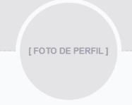
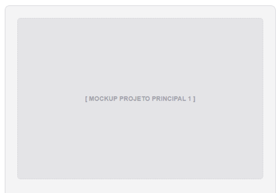

Carlos Eduardo
Especialista em Front-end & DesgnSou uma pessoa que pensa muito sobre as coisas e costuma guardar bastante do que sente. Ao longo da minha vida passei por momentos difíceis que me trouxeram tristeza, ansiedade, raiva e sensação de solidão. Tenho dificuldade em lidar com algumas situações familiares e, às vezes, isso afeta minha autoestima e minha forma de enxergar a vida. Apesar disso, continuo tentando seguir em frente, entender melhor meus sentimentos e encontrar maneiras de melhorar como pessoa.
#html5
#css3
#js
#ux
Projeto em Destaque
Os pricipais desenvolvimentos realizados durante a formação técnica
